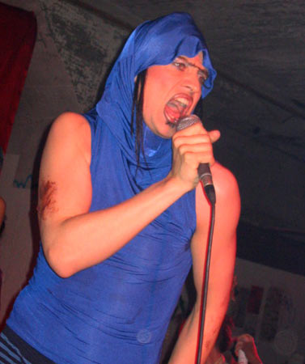
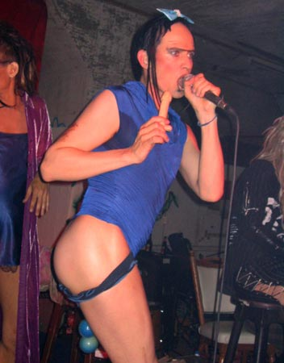
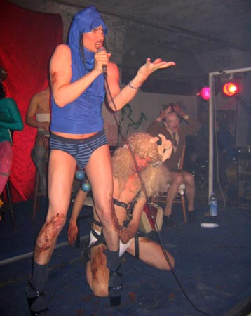
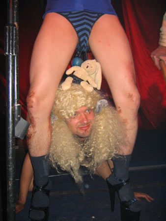
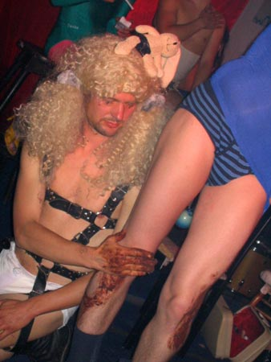
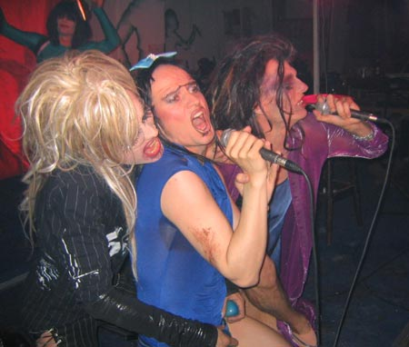
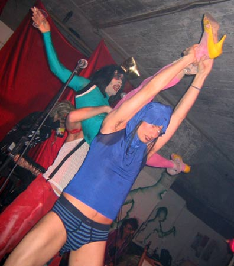

Dennis Agerblad Live with Dunst at Queeruption 6, Amsterdam. |

Dennis Agerblad.

Dennis Agerblad.

Dennis Agerblad & Bjarnepigen.

Dennis Agerblad & Bjarnepigen.

Dennis Agerblad & Bjarnepigen.

Hairwerk, Dennis Agerblad & Liebling Siebling.

Dennis Agerblad holding Puta.